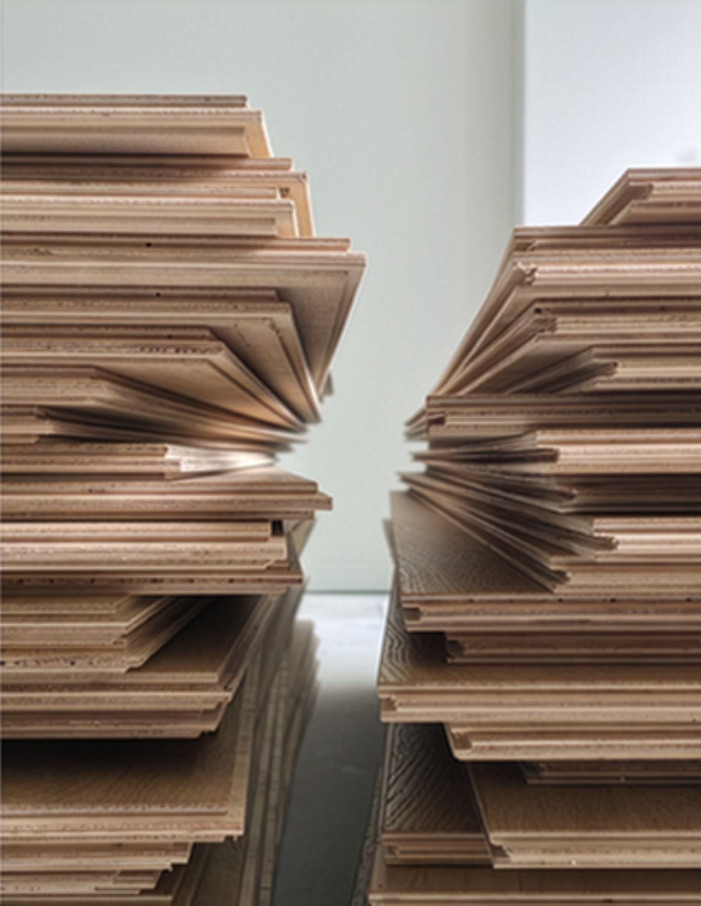
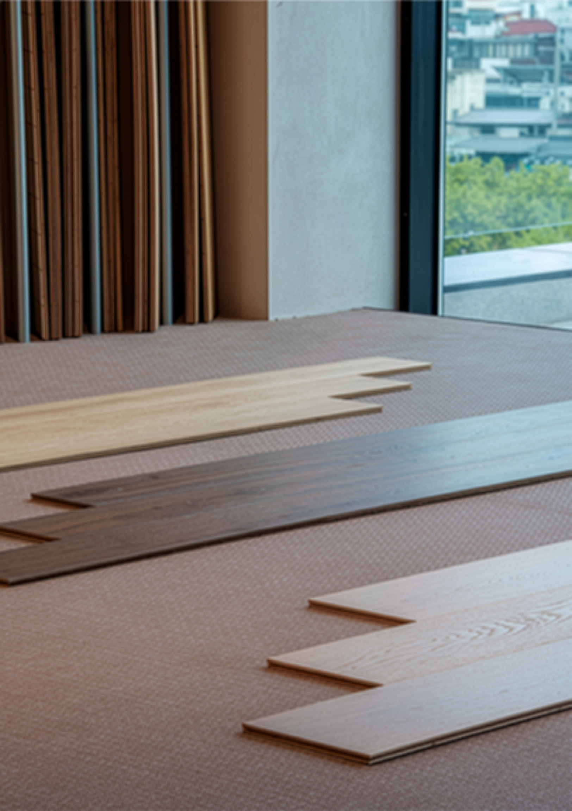

About — Rustic Collage

러스틱(Rustic)은
원초적인 재료를,
꼴라주(Collage)는
서로 다른 조각을 붙여
하나로 만드는 예술을 의미합니다.
러스틱꼴라주는
재료를 고르고, 삶을 연결하며,
이야기를 이어갑니다.
덧붙이고, 겹치고, 연결되는
공간의 미학을 담고 있습니다.
-
고르고
Select
-
붙이고
Place
-
더하다
Layer
Rustic speaks to
the essence of raw materials.
Collage is the art of bringing
different pieces together into a unified whole.
Rustic Collage curates materials,
connects everyday life,
and weaves stories into space.
It embodies the aesthetics of layering,
accumulation, and connection.
